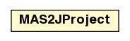

jason.mas2j
Class MAS2JProject

java.lang.Object
 jason.mas2j.MAS2JProject
jason.mas2j.MAS2JProject
public class MAS2JProject
- extends java.lang.Object
Represents a MAS2J project (usually created from a .mas2j file)
|
Field Summary |
static java.lang.String |
AS_EXT
|
static java.lang.String |
EXT
|
| Methods inherited from class java.lang.Object |
clone, equals, finalize, getClass, hashCode, notify, notifyAll, wait, wait, wait |
EXT
public static final java.lang.String EXT
- See Also:
- Constant Field Values
AS_EXT
public static final java.lang.String AS_EXT
- See Also:
- Constant Field Values
MAS2JProject
public MAS2JProject()
parse
public static MAS2JProject parse(java.lang.String file)
setupDefault
public void setupDefault()
setDirectory
public void setDirectory(java.lang.String d)
getDirectory
public java.lang.String getDirectory()
setProjectFile
public void setProjectFile(java.io.File f)
getProjectFile
public java.io.File getProjectFile()
setInfrastructure
public void setInfrastructure(ClassParameters infra)
getInfrastructure
public ClassParameters getInfrastructure()
setEnvClass
public void setEnvClass(ClassParameters e)
getEnvClass
public ClassParameters getEnvClass()
setSocName
public void setSocName(java.lang.String s)
getSocName
public java.lang.String getSocName()
setControlClass
public void setControlClass(ClassParameters sControl)
getControlClass
public ClassParameters getControlClass()
initAgMap
public void initAgMap()
addAgent
public void addAgent(AgentParameters a)
getAg
public AgentParameters getAg(java.lang.String name)
getAgents
public java.util.List<AgentParameters> getAgents()
getAllASFiles
public java.util.Set<java.io.File> getAllASFiles()
fixAgentsSrc
public void fixAgentsSrc(java.lang.String urlPrefix)
- change the source of the agents using the source path information,
also considers code from a jar file (if urlPrefix is not null)
addClassPath
public void addClassPath(java.lang.String cp)
getClassPaths
public java.util.List<java.lang.String> getClassPaths()
addSourcePath
public void addSourcePath(java.lang.String cp)
getSourcePaths
public java.util.List<java.lang.String> getSourcePaths()
removeSourcePath
public void removeSourcePath(int index)
addDirectiveClass
public void addDirectiveClass(java.lang.String id,
ClassParameters classname)
getDirectiveClasses
public java.util.Map<java.lang.String,java.lang.String> getDirectiveClasses()
registerDirectives
public void registerDirectives()
toString
public java.lang.String toString()
- Overrides:
toString in class java.lang.Object
getInfrastructureFactory
public InfrastructureFactory getInfrastructureFactory()
throws JasonException
- Throws:
JasonException